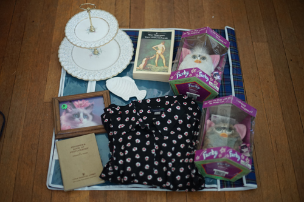

yard sales on sunday have an awful selection but a lot of free stuff!! most of this was from a mobile home park community yard sale.
i found the doll that was my christmas present that my mom never wrapped! there's something about her that drew me to her even though i've never really cared about baby dolls. she's so cute and i absoutely adore her!! She's from 1969, made by horsman, and can haunt me for the rest of my life if she so pleases. iirc she was $10 at a thrift store. a small price for the most beautiful baby doll ive ever seen!! that being said, i realize no one will enter my house again after seeing her. its hard to tell from the photos but her eyes are golden brown and her hair is a very light pink. the eye mechanism in her right eye doesnt seem to work properly either
i sliced the back of my heel in the shower while i was shaving. rip. i think its done bleeding now. ouchie ouchie!!
also big news!! I cut Ryan's hair yesterday. it was scary and i cut it too short! it's a bit of a reviewbrah cut but i really like reviewbrah so thats no issue for me.
i dont normally have much crap to talk about america, but it is such a bummer that we dont really have artisans here. when i was in germany, i found this little shop owned by a woodworker. it was filled with trunks and chests and other wood products and his work was just beautiful! i bought a tiny chest from him but i would love to go back there and drop a few hundred dollars at him to get a full sized chest made by him. i cant remember his name or the city and im not even sure if he's alive anymore since this was 13 years ago. but anyway i just really wish i could find people who do amazing work like him in the US. the best we have here is crafters, but the skill level is usually quite different. i wish we could appreciate handmade things more than mass produced and things that will last longer rather than be tossed in a year.